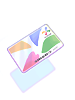
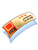
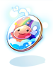
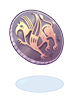

Introduction to NovaRO/Portuguese
Bem vindo ao NovaRO!
Nova Ragnarok Online é um servidor privado Renewal com uma miríade de recursos oficiais e customizações exclusivas. Aqui você será introduzido a algumas delas.
Informações báscias e detalhes sobre o servidor como rates, status máximos, e nível máximo podem ser encontradas na página Server Information.
Se essa é a sua primeira vez jogando Ragnarok Online, recomendamos que você dê uma olhada em Introduction to Ragnarok Online ou se você é um guerreiro pre-renewal, a página Introduction to Renewal vai te ajudar a se atualizar.
Comunidade NovaRO
Wiki
A wiki NovaRO é uma wiki mantida pela comunidade, e a principal fonte sobre qualquer informação sobre o servidor, sejam guias, informações sobre conteúdo in-game, sistemas e mais.
As páginas mais importantes podem ser encontradas na Main Page. Se você não conseguir encontrar o que estava procurando, use a barra de pesquisa na parte superior direita da wiki.
Fóruns
O NovaRO Forum é o lugar para ficar atualizado sobre as novas atualizações, fazer sugestões, reportar bugs ou solicitar suporte da Equipe.
Discord
O NovaRO Discord server é o principal hub fora do jogo para interagir com outros jogadores através de discussões gerais, conselhos sobre o jogo e mais.
Perguntas Frequentes
Main Page: FAQ
Com tantas coisas para aprender, é comum se sentir perdido e confuso no começo. Não tema, a página FAQ (perguntas frequentes) vai esclarecer definitivamente ao menos algumas questões que você possa ter quando começar.
Se as suas perguntas ainda não forem sanadas pela página FAQ, perguntar no jogo ou no Discord é sempre uma alternativa válida.
Comandos do Jogador
Main Page: Player Commands
Como a maioria dos servidores privados, jogadores do NovaRO tem uma variedade de comandos ao seu dispor, desde pesquisa por itens e monstros na database, pesquisa no mercado e conveniências em geral.
Jogadores também podem fazer uso de NovaExt para ter acesso a ainda mais recursos, como FPS e telas de ping, alcance e indicadores de buff, turbo e atualização rápida.
O Main Office
Main Page: Main Office
O Main Office de Prontera é um enorme prédio dividido em cinco andares diferentes, onde residem muitos NPCs convenientes. Você pode chegar na sua entrada rapidamente utilizando o comando @go 50.
Moedas
A tabela seguinte lista as moedas utilizadas no NovaRO, como elas são obtidas, e o que pode ser adquirido com elas.
| Moeda | Obtida de | Uso |
|---|---|---|
|  Nova Points |
|
|
 Gold Coins |
|
|
|  Event Tickets |
|
|
|  Endeavor Tokens |
| |
 Valor Badges |
| |
|  Siege Tokens |
| |
  Moedas de Eventos Sazonais |
| |
 Monster Coupons |
|


Conteúdo Oficial e Customizado
Nossos desenvolvedores trabalham muito todos os dias para trazer os últimos conteúdos oficiais do servidor kRO e ajustá-los para garantir que sejam balanceados, livre de bugs e que sirvam bem no servidor.
A maior parte do conteúdo oficial é portado para o servidor, incluindo mecânicas e sistemas, Instances, classes e balanceamento de classes, atualizações em geral e mais.
De recursos para qualidade de vida até novos mapas e chefes e mesmo novos métodos de PVP, conteúdo customizado também tem um papel importante em fazer NovaRO o que é. Alguns exemplos são:
- Monster Hunter: Lute contra chefes poderosos para adquirir equipamentos poderosos.
- Custom Headgear Quests: Quests para visuais e equipamentos.
- Draft War of Emperium: War of Emperium onde novos times são elaborados por Capitães a cada WoE.
- King of Emperium: Um modo Siege onde diversos times competem entre si em uma arena para capturar o Emperium.
- Valentine's Day, Summer Festival, Trickster King's Invasion e Helping Santa: Eventos Sazonais em todo o servidor.
- E muito mais!